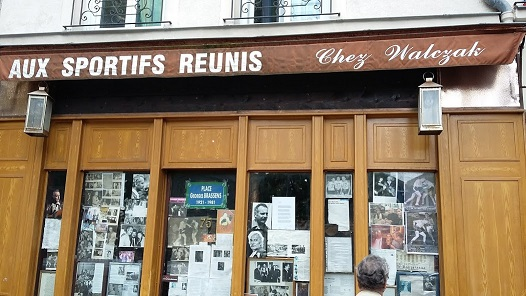
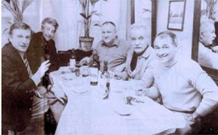

Le bistrot
The bistro
Georges Brassens (1960)
|
|
NOTES
| On connaît le nom et l'adresse du bistrot décrit par Bassens dans cette chanson. Il s'appelle "Aux sportifs réunis" et est situé juste en face de l'actuel "Parc Georges Brassens" (Paris 15e). Il appartenait à Yanek (Jean) Walczak, un ancien mineur devenu boxeur dans sa jeunesse. | We know the name and location of the bistro that Brassens describes in this song. It is called "Aux Sportifs Réunis" and it is situated opposite the "Parc Georges Brassens" (Paris 15e). It was owned by Yanek (Jean) Walczak. He was originally a miner and took up boxing in his youth. |

|
(1) Comme pour la plupart des chansons de Brassens sur ce site, cette traduction anglaise chantable s'inspire de la traduction en prose publiée sur son blog par David Yendley (http://dbarf.blogspot.fr/2012/05/alphabetical-list-of-my-brassens-songs.html). Il en est de même de certaines des notes ci-après: 1) Toute les trois lignes, on a une rime en asse. Il s'est avéré impossible de reproduire cette inélégance assumée dans la traduction. 2) Petit bleu: Désignait autrefois un "gros rouge". (3) Marmiteux: qui a l'air vieux (comme une vieille marmite). (4) Calamiteux: catastrophique, peut-être des gens qui attirent la malchance. (5) Fée: traduit par "Shéhérazade" pour les besoins de la rime, bien sûr. Shéhérazade était une fée à sa façon: elle enchantait les nuits d'un sultan. |
(1) As for most of the Brassens songs at this site, this singable translation is based on the prose translation posted by David Yendley on his blog (http://dbarf.blogspot.fr/2012/05/alphabetical-list-of-my-brassens-songs.html), as are some of the following notes: 1) Every third line in the original has the same rhyme throughout the poem: asse. It proved to be too big a challenge for the translator. 2) Petit bleu - In familiar speech, this describes a poor quality wine. (3) Marmiteux: looking old - in a bad state (like an old pan, marmite). (4) Calamiteux: catastrophic, calamitous, unfortunate, disastrous. (5) Fée - As well as fairy, this can mean; enchantress, siren, magician. |
|
CETTE CHANSON A-T-ELLE ENVENIME LES RELATIONS ENTRE WALCZAK ET BRASSENS? Une photo prise après 1960 montre Brassens et Walczak assis tranquilement l'un à côté de l'autre dans le restaurant de Pierre Vedel. Walczak siège à la droite de Brassens. Malgré toutes les gracieusetés débitées par ce dernier, il ne semble pas que l'ancien boxeur fasse des efforts démesurés pour faire bonne figure. Il est probable qu'au sein de ce groupe d'amis n'ait rien trouver à redire à ce qu'ils savaient être un monceau d'exagérations et de provocations à prendre à la rigolade, une des spécialités favorites de Georges Brassens. Le fils de Walczak a repris le restaurant de son père. Il l'a rebaptisé "Chez Walczak" (75 rue Brancion P15). Cependant, il fait en sorte que subsiste l'esprit des "Sportifs Réunis", en y conservant de précieus souvenirs de l'époque Brassens. On trouvera des informations pratiques sur Internet, à l'adresse: http://www.resto-de-paris.com/chez-walczak-sportifs-reunis/restaurant/paris |
DID THIS SONG LEAD TO A QUARREL BETWEEN JEAN WALCZAK AND BRASSENS? A later photograph shows Brassens and Walczak sitting happily together at the restaurant of Pierre Vedel. Walczak is sitting to the right of Brassens. In spite of the latter's insults, it might seem that the former boxer's face is quite presentable and he is not too overweight. Probably the song would have been acceptable in their group as it was recognised as massive exaggeration intended to provoke but not too seriously- which Brassens often enjoyed doing. Walczak's son now runs the business, whose restaurant he now calls "Chez Walczak" (75 rue Brancion P15). However he has ensured that "Aux Sportifs Réunis" lives on, to sustain nostalgic memories of the Brassens era. All this is advertised on the Internet at: http://www.resto-de-paris.com/chez-walczak-sportifs-reunis/restaurant/paris |

Brassens chante "Le bistrot"